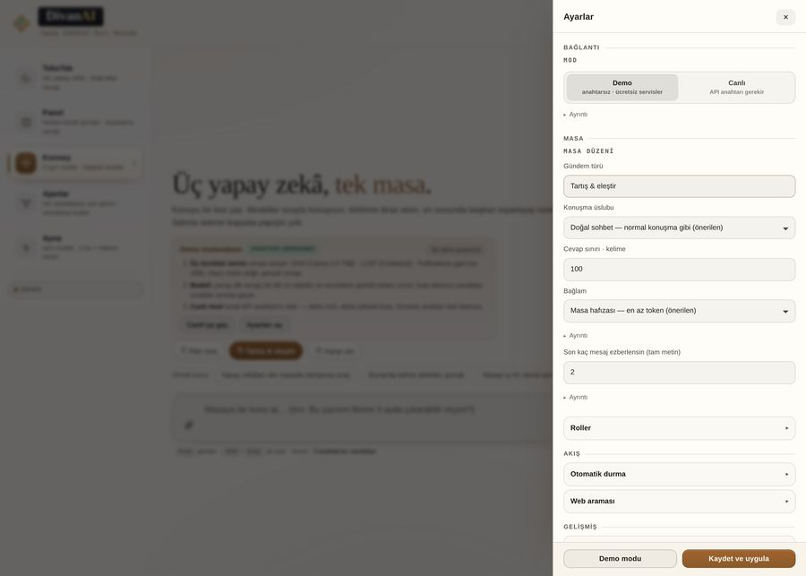

Anahtarın ve konuşman nerede duruyor?
Bu sayfa bir gizlilik sözleşmesi değil, teknik bir döküm: hangi veri nerede duruyor, kim görebiliyor, nasıl silinir. Yapamadığımızı da yazdım.

Üç veri, üç yer
| veri | nerede duruyor | kim görebilir |
|---|---|---|
| API anahtarın | Tarayıcının yerel deposu, AES-GCM ile şifreli | Yalnız bu cihaz |
| Konuşma geçmişin | Aynı yerel depo | Yalnız bu cihaz |
| Modele giden istek | Doğrudan seçtiğin servis | O servis (kendi gizlilik politikası) |
DivanAI'ye ait bir sunucu, veritabanı ya da hesap sistemi yok. Bu yüzden bizde senin verinin kopyası oluşmuyor — teknik olarak oluşabileceği bir yer yok.
Neyi saklamıyoruz
- Ad, e-posta, telefon: hesap yok, istemiyoruz.
- Analitik, çerez, parmak izi: sayfada tek bir takip betiği yok.
- Sunucu kaydı: sunucu olmadığı için erişim kaydı da yok.
Bunları “saklamıyoruz” diye yazmak kolay; kanıtı sayfanın kaynağında: dosyayı indir, içinde üçüncü taraf betiği arayan tek satır bulamazsın. Testlerimiz de her sürümde bunu denetliyor.
Senin yapabileceklerin
- Anahtarı sil: Ayarlar → Bağlantı → Bu tarayıcıdan sil.
- Geçmişi sil: Geçmiş paneli → kaydı sil. Tarayıcı verilerini temizlemek de hepsini siler.
- Anahtarı hiç kaydetme: Ortak bilgisayarda her oturumda elle yaz.
- Parola kilidi: Ortak cihazda anahtarı parolayla kilitle (Ayarlar → Bağlantı).
Sınırlarımız (saklamıyoruz)
Seçtiğin servis isteğini kendi politikasına göre işler; oradaki saklama süresini biz belirlemiyoruz. Tarayıcının kendi deposu cihazdan cihaza farklıdır; cihazını paylaşıyorsan bunu hesaba kat. Ve şunu da yazalım: hiçbir tarayıcı eklentisi/zararlı yazılım senaryosuna karşı mutlak koruma yok — bizim iddiamız “arada sunucu yok”, “her şeye dayanıklı” değil.
Sık sorulan sorular
Anahtarım sunucunuza gidiyor mu?
Hayır. Anahtar tarayıcında şifreli durur, istek doğrudan servise gider. Sunucumuz yok.
Anahtar şifreliyse neden yine de dikkatli olayım?
Şifreleme anahtarı aynı cihazda tutulur; cihazı paylaşıyorsan parola kilidini aç ya da anahtarı kaydetme.
Konuşmalarımı sonra okur musunuz?
Okuyamayız: konuşma sizin tarayıcınızda, bizde kopyası yok.
Çerez kullanıyor musunuz?
Reklam/analitik çerezi yok. Yalnız ayarlarını hatırlamak için tarayıcının yerel deposu kullanılır.